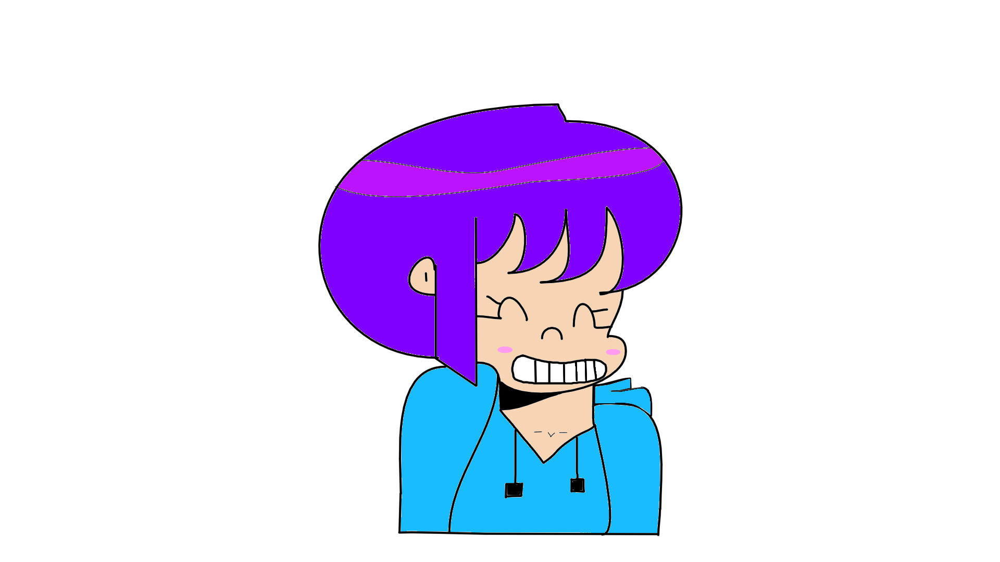

Build the lab.
Virtual machines, Linux, networking, containers, monitoring, and learning by breaking things safely in my own environment.
SIGNAL FOUND // UNKNOWN OPERATOR
That’s fine. Have a look around.
INTERCEPTED SIGNAL / POSSIBLY HUMAN ON THE OTHER SIDE
Learn how it works.
Exploit it, Fix it.

curiosity is a tool
Cybersecurity is more than breaking things. It’s learning how they work, knowing where they fail, and improving on failure.
This site is my own little corner for security, hands-on experiments, creative technology, and the projects I’m building along the way. Just me learning, documenting the progress along the way, and a bit of my personality.
WHO’S BEHIND THIS? ↗
Learn how to attack.
To learn how to defend.
Virtual machines, Linux, networking, containers, monitoring, and learning by breaking things safely in my own environment.
A Flask-based CTF platform built to help highschool students practice, solve challenges, and learn through hands-on work.
OPEN CHANNEL
Want to talk security, projects, or share something worth learning?
MAKE CONTACT ↗